dynamic-networks — figure gallery
16 figures across 12 studies. Use the list on the left to jump to any study; each figure has its own ↓ download.
Erdős–Rényi random growth
01-erdos-renyi-random-growth

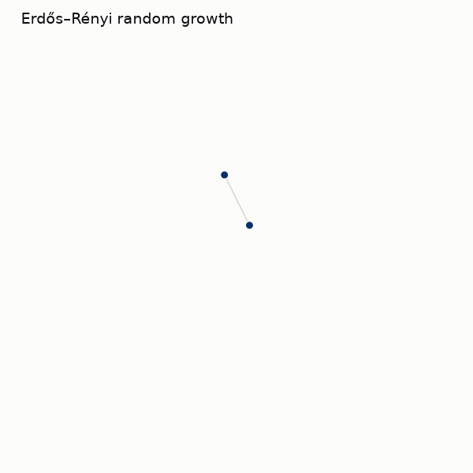
Barabási–Albert preferential attachment
02-preferential-attachment

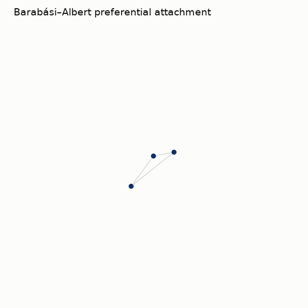
Watts–Strogatz small-world rewiring
03-small-world-rewiring

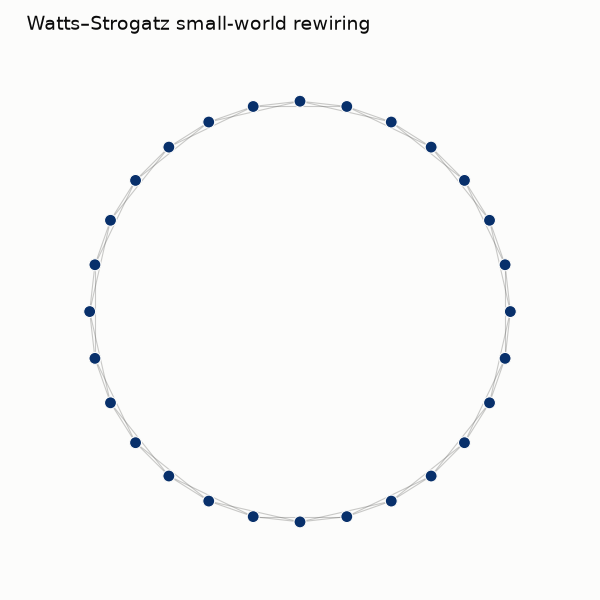
Bianconi–Barabási fitness attachment
04-fitness-condensation

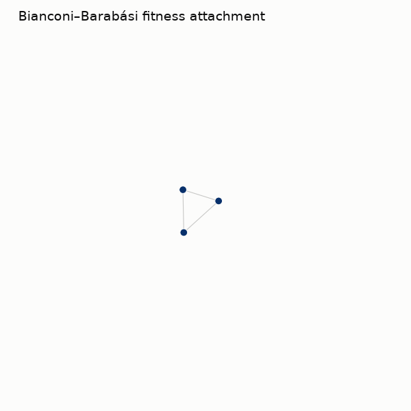
Duplication–divergence (biological growth)
05-duplication-divergence

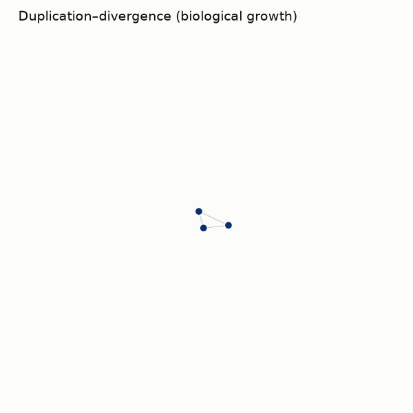
Forest-fire growth & densification
06-forest-fire-densification

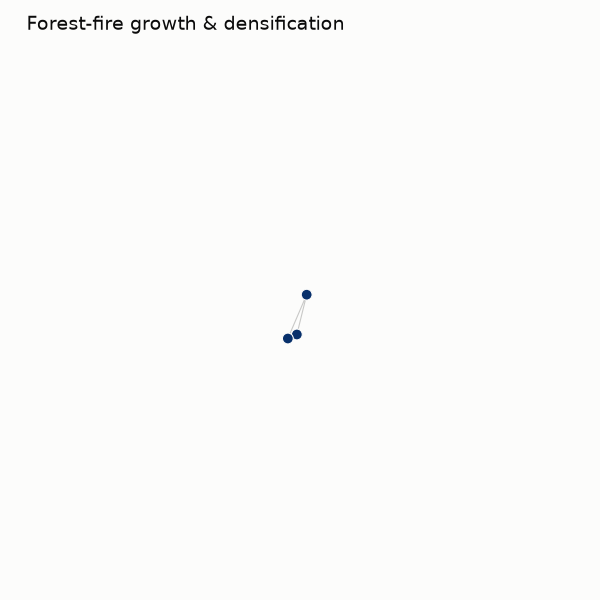
Adaptive coevolution (opinions + rewiring)
07-adaptive-coevolution

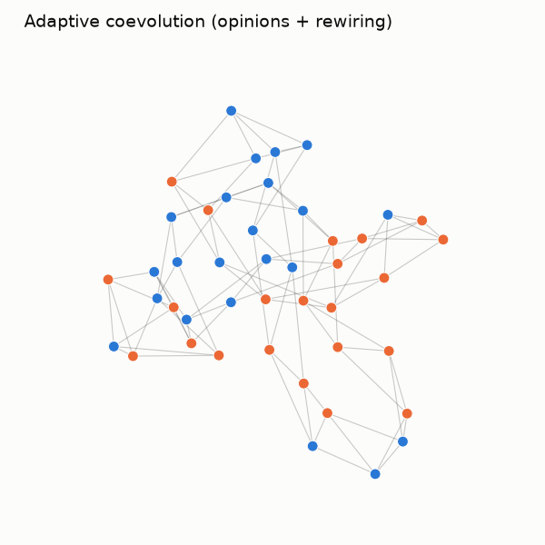
Activity-driven temporal network
08-activity-driven-temporal

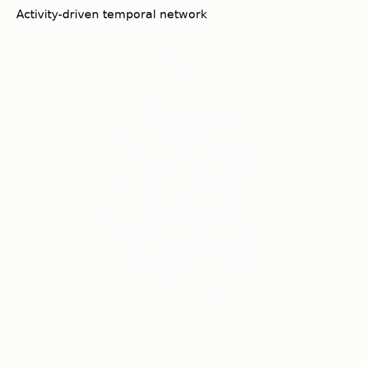
SBML reactors on a network — diffusive coupling synchronises
09-sbml-nodes-coupled

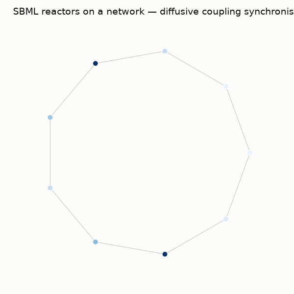
SBML reactors on a network — uncoupled control (no diffusion)
10-sbml-nodes-uncoupled

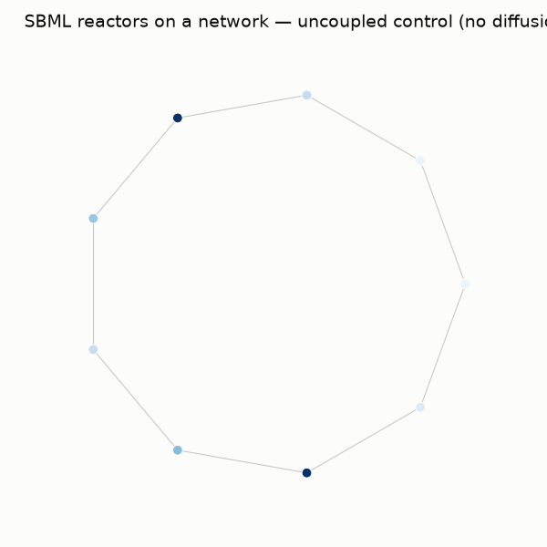
Dynamics on a growing network — reactors entrain as the graph is built
11-coevolving-growing-network

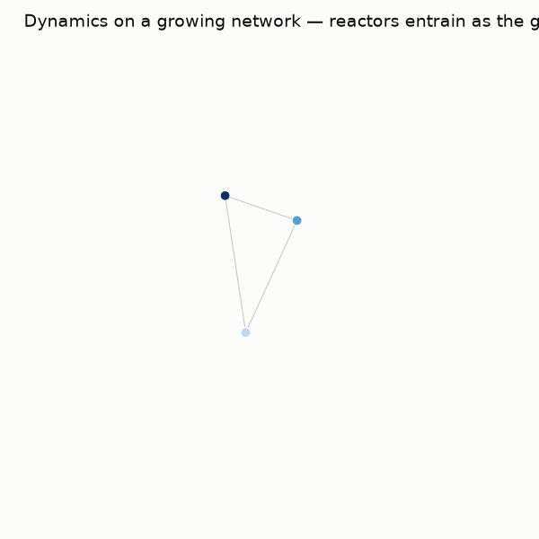
Dynamics on a rewiring network — synchrony survives continual rewiring
12-coevolving-rewiring-network

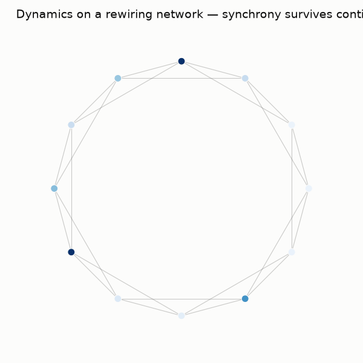